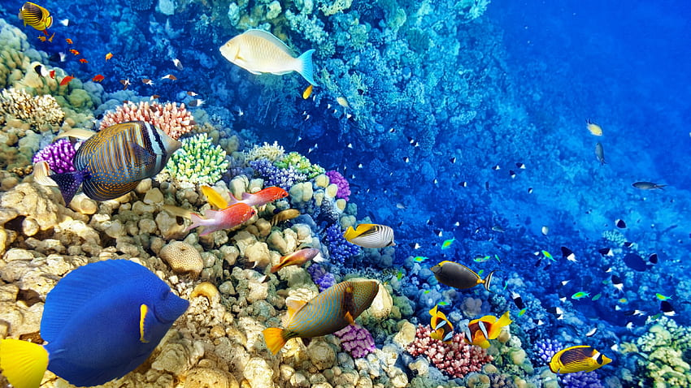
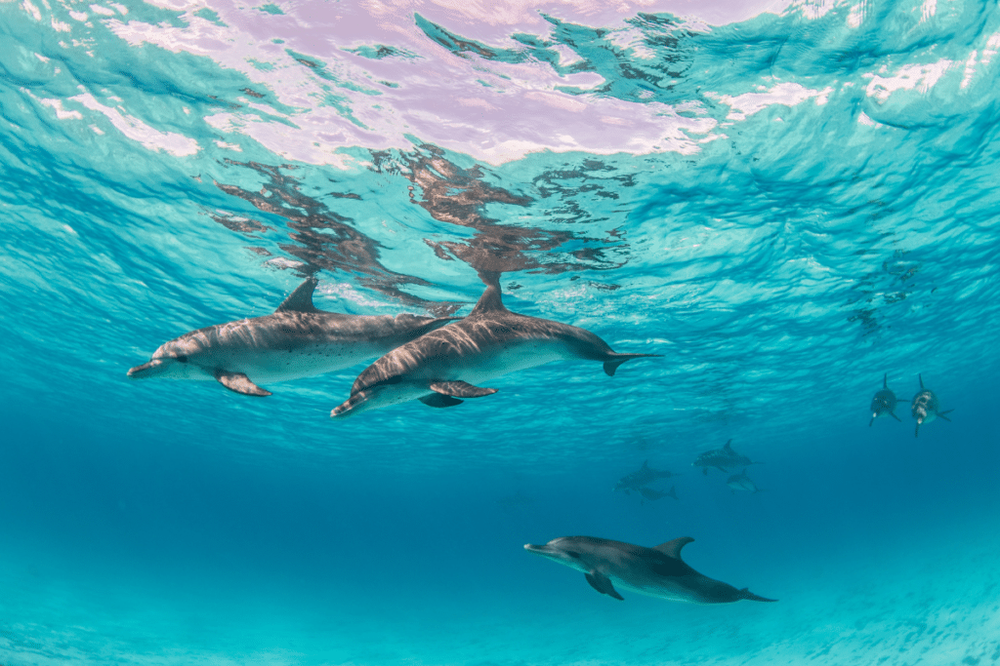
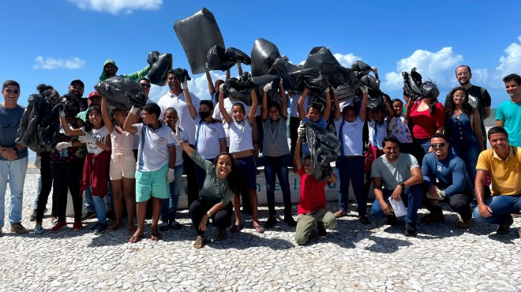

EXPLORE O MUNDO MARINHO COM BLUE HORIZON
Explore o Blue Horizon e descubra o incrível mundo marinho conosco. Nossa plataforma oferece vídeos educativos, infográficos interativos e histórias inspiradoras sobre oceanos, vida marinha e conservação. Venha se maravilhar conosco e junte-se à nossa jornada de descoberta e aprendizado!


Visão geral do projeto Blue Horizon
Explore as maravilhas dos oceanos e descubra um mundo de possibilidades além do horizonte azul.
Últimas Postagens

Expedição Submarina: Uma Jornada pelos Recifes de Coral
Compartilhe uma emocionante recapitulação de uma recente expedição
submarina, destacando os incríveis recifes de coral e a diversidade de vida marinha encontrada
durante a viagem.

Top 10 Destinos de Ecoturismo Marinho
Descubra a beleza única dos oceanos. Cada local oferece uma experiência de conexão com a natureza. Prepare-se para se encantar com a diversidade marinha e inspirar-se a proteger esses ambientes para o futuro.

Projeto de Limpeza Costeira
O objetivo deste ciclo de mutirões é promover a conscientização ambiental, por meio da coleta desses resíduos. Desta forma, compartilhamos informações sobre a importância do ecossistema costeiro e os motivos pelos quais não se deve descartar lixo na praia.